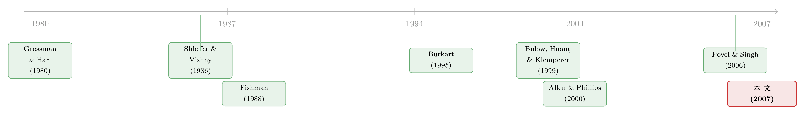

一笔提前卖出的股权，是为了让你将来「抢着加价」
本文读的是 Mathews (2007, Review of Financial Studies)：一家年轻公司之所以会把自己的一块股权卖给某个潜在收购方，可能既不是为了融资，也不是为了解决合作中的「敲竹杠」，而是为了在未来某场收购竞价里，把这位买家变成一个会主动抬价的「内部人」——这块股权本质上是一枚被精心设计过的「桥头堡」(toehold)，让目标公司与它的合作伙伴结成同盟，去榨取后来才出现的外部竞价者的剩余。
1 一个反复出现、却没人愿意明说的剧本
先讲两个真实的故事。
1990 年 3 月，NCR 和 Teradata 签了一份「联合开发协议」，同时 NCR 买下了 Teradata 9% 的股权。一年多以后，1991 年 12 月，NCR 干脆把 Teradata 整个买了下来。合并当天，NCR 的 CEO 说：「这次合并是顺理成章的一步，因为我们既有的联合开发组织非常成功……」
再看一个结局不同的：1999 年 12 月，Amazon 拿下了 Ashford.com 16.6% 的股权，作为在 Amazon 上卖奢侈品的交易的一部分。但 Ashford.com 后来并没有被 Amazon 收购——2001 年 9 月，它被 Global Sports 买走了。
这类交易多到什么程度？Allen 和 Phillips (2000) 数出，仅 1980–1991 年间就有 227 起公司直接向其他公司出售大额股权的案例，平均出售规模是卖方股权的 15%。这些发行公司里，相当一部分会在两年之后被收购——有的被买股权的那家买走，有的被第三方买走，有的则一直独立。
剧本几乎一模一样：一家年轻、创新的公司，向一家成熟的大公司卖出一小块股权，往往同时还结成战略联盟；交易时双方要么对控制权问题闭口不谈，要么信誓旦旦地说「没有进一步的收购计划」。然后,过些日子，这家公司常常就被人收购了。
于是一个很自然的问题冒出来了：这些股权出售，到底是不是冲着未来的控制权来的？如果是，那这样的交易什么时候会发生？股权的大小和价格又是怎么定出来的？
这篇文章给出的答案，初看相当反直觉：这块股权的真正用途，是去对付那些此刻还没出现、将来才会冒头的竞价者。
2 为什么不能「一次把所有人叫到桌上」
要理解这篇文章，先得理解它设定的那个「不对称」的世界。
机制设计里有一个人尽皆知的结论：一个能够对销售流程做出可信承诺的卖家，可以榨干一场竞价里几乎所有的预期剩余。比如，它可以承诺办一场有效率的拍卖，然后向每个潜在买家收一笔「入场费」，正好等于这个买家的事前预期收益。如果目标公司能把所有潜在买家同时叫到谈判桌上，它当然乐意这么干。
但问题是，它做不到。文章把这种「做不到」写进了交易的时序里：
- 在早期，产品和市场都还充满不确定性，目标公司只能识别出一个天然的合作伙伴——通常就是那个能和它结盟的成熟企业。文章把这个人称为「内部人」(insider, 记作 \(I\))。这个人可以提前谈。
- 而其余那些外部人 (outsiders, 记作 \(O_j\)) 是谁，要等到不确定性揭开、产品形态明朗之后才认得出来。等你认出他们时，事前承诺的窗口早就关上了。
这就是全文的引擎：关系是序贯 (sequential) 展开的——一个买家先到，其余买家后到。 早到的那位往往还掌握着联盟的话语权，甚至能逼着目标公司「排他性谈判」。换句话说，目标公司没法把未来所有的钱都提前锁进一份合同里。
那它能做什么？它手上唯一能提前动用的筹码，就是那个早到的内部人。于是真正关键的一步在于：目标公司和内部人结成一个「同盟」(coalition)，一起去设计一个事后的卖资产机制，然后用一笔事前的转移支付把同盟的总剩余分掉。 谈判用的是带谈判力 \(\theta_T\) 的广义纳什讨价还价 (generalized Nash bargaining, 见 Svejnar 1986)。
接着，一个自然的问题是：这个同盟，到底应该设计一个什么样的机制？
3 模型：从「最优拍卖」到「一块会自己抬价的股权」
3.1 设定
把这个故事压缩到最简：目标公司 \(T\) 独立价值标准化为 0，全部股权是一份可无限分割的股票。它和 \(N+1\) 个潜在收购方在三个阶段里互动。
每个潜在收购方对目标资产都有一个未知的、私有的协同价值 (synergy value)。是否存在协同，由一个状态变量 \(Z \in \{z^-, z^+\}\) 决定：\(\Pr[Z=z^+]=s\) 是「正协同」状态（此时收购有利可图），\(\Pr[Z=z^-]=1-s\) 是「无协同」状态。\(Z\) 在第二阶段才揭晓。
内部人 \(I\) 在正协同状态下总是有正协同，其价值 \(V_I\) 服从连续分布 \(F_I(\cdot)\)，支撑 \([0,\lambda_I]\)，密度 \(f_I(\cdot)\)。外部人有「高」「低」两型，只有高型才可能有正协同，价值 \(V_O\) 独立同分布于 \(F_O(\cdot)\)，支撑 \([0,\lambda_O]\)。关键摩擦在外部人身上：他们要花一笔调查成本 (investigation cost) \(c\)，才能在第二阶段开头查清自己的类型——这笔钱代表尽调、管理层时间等一切「搞清楚这桩收购值不值」的代价。
文章对两个分布都施加了标准的单调风险率假设 (monotone hazard rate assumption)。定义风险函数
$$ H_i(v) = \frac{f_i(v)}{1 - F_i(v)}, \qquad i \in \{I, O\}, $$
要求 \(H_i'(v) \ge 0\)。这个假设被均匀、指数、正态、logistic、极值、卡方等众多常见分布满足——它是后面所有「最优机制」推导能干净走下去的技术前提。
3.2 同盟想要的：一个带「或然底价」的最优拍卖
站在同盟的角度，未来无非两种结局：要么自己留着资产、兑现内部人的协同价值 \(v_I\)；要么把资产卖给某个外部人。这正是一个经典的最优拍卖 (optimal auction) 问题，而它的解大家都熟悉——这是 Myerson 和 Bulow & Roberts (1989) 的领地。
最优机制等价于：对外部人办一场二价拍卖 (second-price auction)，并设一个底价 (reserve price)。而底价该设多高，取决于同盟「不卖」的机会成本，也就是内部人的协同价值 \(v_I\)。用虚拟价值 (virtual valuation) 来写，外部人的虚拟价值是
$$ J_O(v) = v - \frac{1 - F_O(v)}{f_O(v)} = v - \frac{1}{H_O(v)}, $$
最优底价 \(r^*\) 设在「外部人的虚拟价值恰好等于内部人的真实价值」那一点：\(J_O(r^*) = v_I\)。直觉是：只有当一个外部人的虚拟出价高过同盟自己留着资产的价值时，才值得把资产卖给他。底价是 \(v_I\) 的函数——内部人越值钱，同盟越舍不得卖，底价就该越高。
但这里埋着一个致命的难题：\(v_I\) 是内部人的私有信息，第二阶段才被它自己私下观测到，不可验证。同盟没法写一份「底价 $=$ 某函数 \((v_I)\)」的合同去强制执行——内部人完全可以谎报。那这个随 \(v_I\) 浮动的或然底价，到底怎么在现实里落地？
3.3 反转：让股权替你执行底价
这就是全文最漂亮的一步。
答案是：别去签那份不可执行的合同，而是把目标公司的一块股权 \(\alpha\) 提前转给内部人，然后让内部人和外部人一起参加一场普通的二价拍卖。
为什么这样就够了？这要用到收购文献里一个被反复证明过的事实（Burkart 1995；Singh 1998；Bulow, Huang & Klemperer 1999）：一个持有目标公司股权（桥头堡）的竞价者，会在拍卖里主动「抬价」(overbid)，出价高于自己的真实价值。
我们把这一步显式地推一遍。设内部人持股 \(\alpha\)、真实协同价值为 \(v_I\)，竞争对手（外部人）的最高出价分布为 \(G(\cdot)\)、密度 \(g(\cdot)\)。在二价拍卖里，内部人选一个出价 \(b\)：
- 若赢（对手最高出价 \(x
- 若输（对手出价 \(x>b\)）：对手按二价（也就是内部人自己的出价 \(b\)）成交，内部人把手里的 \(\alpha\) 股卖掉，得到 \(\alpha b\)。
于是它的期望收益是
$$ \Pi(b) = \int_0^b \big[\, v_I - (1-\alpha)x \,\big]\, dG(x) \;+\; \alpha\, b\,\big[\,1 - G(b)\,\big]. $$
对 \(b\) 求一阶条件：
$$ \Pi'(b) = \big[\,v_I - (1-\alpha)b\,\big] g(b) \;+\; \alpha\,[1 - G(b)] \;-\; \alpha\, b\, g(b) = 0, $$
把含 \(b\) 的项并到一起，\(g(b)\,(v_I - b) + \alpha\,[1-G(b)] = 0\)，整理就得到内部人的最优出价：
看最后这个式子：因为内部人持有 \(\alpha\) 的股权，它在输掉时还能从对手付的高价里分一杯羹，所以它有动机把出价往上抬，抬的幅度恰好是 \(\alpha\) 乘以逆风险率。\(\alpha\) 越大，抬得越狠。
到这里，两条线就接上了。同盟想要一个随 \(v_I\) 浮动、且单调递增的或然底价；而一个持股 \(\alpha\) 的内部人，恰好会出一个随 \(v_I\) 单调递增、且高于 \(v_I\) 的价。文章证明：只要把 \(\alpha\) 调到合适的大小，内部人在二价拍卖里的那个「被抬高的出价」，就精确地复刻了最优机制里那个不可执行的或然底价。 哪怕内部人完全自私、机会主义地出价，股权所有权也把它「绑定」到了对同盟最优的行为上。前人记录的「桥头堡抬价效应」，被一对一地映射进了同盟的最优机制——这就是这篇文章的核心贡献。
还有一个让结论更稳健的副产品：就算未来的收购竞价不是同盟自己设计的，而是外生地被规定成一场标准二价或英式拍卖（这正是收购文献里最常见的假设），那么本文推出的这块股权，也恰好是目标公司和内部人之间的最优合同。所以不管你信不信「双方能对未来拍卖格式做承诺」，结论都成立。
4 股权该有多大？被外部人的「肯不肯查」卡住
既然 \(\alpha\) 越大、内部人抬得越凶、同盟榨取的剩余越多，那为什么不一路把 \(\alpha\) 推到极限？
因为还有外部人的参与约束。外部人要先花 \(c\) 去调查，才肯入场。\(\alpha\) 越大，内部人出价越高、底价越凶，外部人将来能赢、能赚的预期收益就越薄。当 \(\alpha\) 大到让外部人觉得「调查这一趟回不了本」时，他们干脆不来了——而没有外部人入场，整套抬价机制就失去了对象。 所以：
最优股权规模 \(\alpha^*\) 定在这样一个临界点上：再多给内部人一丁点股权，就会让外部人的调查变得无利可图。
这个刻画一下子带出一串可检验的比较静态：
- 股权规模随调查成本 \(c\) 下降而……不，是随 \(c\) 上升而下降。 外部人越难搞清这桩收购的价值（\(c\) 越高），他们的参与约束越早绑紧，能容忍的 \(\alpha\) 越小。换句话说，观测到的股权大小，应当和「外部人搞清收购价值有多难」紧密相关。
- 股权规模随收购有利可图的概率 \(s\) 上升而增大。 \(s\) 越高，外部人的预期收益越高，越能抵消调查成本，于是能容忍更大的 \(\alpha\)。这和 Pablo & Subramaniam (2002) 的经验发现一致：结盟时同时向伙伴卖股权的公司，公告期异常收益更大。
- 内部人的分布越「强」，最优股权越小。 文章证明：把内部人的价值分布做一次一阶随机占优 (first-order stochastic dominance) 的「改善」，会压低外部人的预期收益、提前绑紧他们的参与约束，从而减小 \(\alpha^*\)。直觉上，当买股权的那位被预期是个相对弱的竞争者时，观测到的股权反而会更大——因为同盟需要更大的桥头堡才能把这个偏弱的内部人「武装」到位。
5 又一个反转：为什么这块股权要「打折」卖
最后一个漂亮的推论，关于价格。
经验上有个长期的对照：私募配售 (private placements) 通常相对发行人股价打折成交，而已有大宗股权的转让 (negotiated block trades) 却往往带溢价（见 Hertzel et al. 2002；Barclay & Holderness 1989；Barclay et al. 2001）。本文给「涉及战略买家的那一类私募配售」给出了一个具体预测。
在「目标和内部人事后谈崩时办一场标准二价拍卖」的假设下，文章证明：这块股权永远会以低于交易后市场价的折扣成交。 为什么？因为内部人提供的是一种「抬价」的公共品 (public good)——在它赢下拍卖、不得不为剩余股权付出超过其真实价值的高价的那些状态里，抬价对它自己是事后亏本的。折扣正是对它承担这份成本的补偿。
换个角度看更直白：一个在内部人拿到股权之后才进来买股票的第三方，会愿意出更高的价——因为它能享受抬价带来的好处（股价被推高），却不必承担抬价的成本。这就解释了为什么「事后转让」会有溢价，而「事前向战略买家配售」会有折扣。同一块股权，因为站在「抬价义务」的哪一边，价格符号就反了过来。
（关于大宗股权交易里价格究竟如何被「砍」出来、控制权私利如何被定价，可参见《控制权的私利，到底值多少钱？》与《看不见交易商的手：一份大宗交易合约该长成什么形状》。）
6 文献脉络
这篇文章坐在两条河流的交汇处。
一条是控制权与大额持股。Grossman & Hart (1980) 和 Shleifer & Vishny (1986) 指出，在分散的目标股东之间存在搭便车问题时，大额持股能让收购更可能成功；Shleifer & Vishny (1986) 也开启了「潜在收购方公开市场吸筹是否划算」的讨论，Kyle & Vila (1991) 接着证明噪声交易能让这种吸筹更有利可图。
另一条、也是本文的直接基石，是桥头堡与抬价。Fishman (1988) 给出了先发制人式收购出价的理论；Burkart (1995) 和 Singh (1998) 证明，在私有价值的收购拍卖里，持有桥头堡的竞价者会最优地抬价（Singh 还点出了「所有者诅咒」）；Bulow, Huang & Klemperer (1999) 把抬价推广到共同价值环境，并指出没有桥头堡的竞价者会反过来保守出价以躲避赢家诅咒。本文正是把这个「抬价效应」从一个外生的副产品，翻转成同盟可以主动设计的最优机制工具。

经验上，Allen & Phillips (2000) 记录了大量公司间股权出售并刻画了它们与产品市场关系、战略联盟的联系，是本文事实基础的来源。最近的 Povel & Singh (2006) 同样得到一个序贯逼近买家的最优销售机制，但他们的序贯性源于事后买家信息质量的差异（且排除了桥头堡），而本文的序贯性源于一个买家的早到——这是两者的分水岭。
7 评论与延伸（Q&A + 研究方向）
(a) 几个可能的疑问
Q：这和「股权解决敲竹杠 (hold-up)」的解释到底有什么区别？
完全不同的机制。Dasgupta & Tao (2000)、Van den Steen (2002)、Harbaugh (2001) 那一支文献里，股权是为了在合作关系内部对齐激励、防止事后被对方敲竹杠。本文的股权根本不指向合作双方之间，而指向未来才出现的第三方竞价者——它是一枚对外的桥头堡。有意思的是，两套理论对数据的预测高度重叠（结盟 + 卖股权），所以经验上很难一刀切开，这恰恰是本文坦承的软肋。
Q：模型最关键的「序贯性」假设可信吗？
这是全文的命门。如果目标公司能把所有买家同时叫到桌上做承诺，它会偏好那个方案，股权就没必要了。文章用三条现实理由支撑序贯性：早期产品/市场不确定让外部买家难以辨认、联盟伙伴可能有力量逼迫排他谈判、以及多方谈判会泄露专有信息且成本高。这些都讲得通，但本质上是假设而非识别，能否成立要看具体行业。
Q：「卖了股权却最终没被收购」不正好说明这交易和控制权无关吗？
恰恰相反，这是本文最反直觉、也最有说服力的一点。股权是在协同价值揭晓之前卖出的，所以无论事后是否真的发生收购，事前动机都可能是控制权。事后的控制权结局，不能反推事前的动机。 这让模型能直接兼容 Allen & Phillips (2000) 中「很多公司卖了股权后仍保持独立」的事实。
Q：为什么用二价拍卖？换成别的格式结论还在吗？
二价拍卖是干净地把「或然底价」映射成「内部人出价」的最自然载体。文章也指出，若未来竞价被外生规定为标准二价或英式拍卖，这块股权就构成目标与内部人之间的最优合同——所以结论不依赖「双方能否对拍卖格式做承诺」。但如果竞价格式是别的（比如带保留价的一价拍卖或谈判），抬价与底价的精确映射需要重新验证。
Q：折扣 vs 溢价的预测，稳健吗？
文章自己很谨慎：折扣结论依赖「谈崩时办标准二价拍卖」这个特定假设。在「谈崩之后会发生什么」的不同设定下，溢价同样可能出现。所以这条预测是「条件性」的，不是铁律——这反而让它在经验上更值得分门别类地检验。
Q：模型假设外部人的信号和内部人一样精确，这现实吗？
不太现实——内部人如果通过联盟获得信息，理应更准。但因为所有人风险中性，给外部人的信号加上随机噪声不改变均衡，所以这个简化是无伤大雅的。真正会改变结论的是系统性的信息不对称（内部人结构性地更懂），那会把模型推向 Povel & Singh (2006) 的地盘。
(b) 几个可能的研究问题与提案
1. 把折扣/溢价预测拿到战略性私募配售数据上做检验。 - 【经济故事】本文给出一个清晰的条件预测：涉及战略买家、且伴随联盟的私募配售应当打折，而事后大宗转让应当溢价；折扣幅度应随后续收购概率 \(s\) 上升、随股权规模 \(\alpha\) 上升而扩大。 - 【可行性】中。需要把私募配售样本按「买家是否战略买家、是否同时结盟」分层（可用 SDC、Allen-Phillips 式的手工识别），再看折扣与「后续被收购」的关联。难点在于 \(c\)、\(s\) 这些结构参数没有直接对应物，识别要靠代理变量（行业研发强度、产品复杂度作为调查成本 \(c\) 的代理）。
2. 用股权规模反推「收购的可调查性」。 - 【经济故事】模型预测 \(\alpha^*\) 随调查成本 \(c\) 下降、随成功概率 \(s\) 上升。这给了一个把「股权大小」当作信息环境温度计的机会：信息越不透明的行业，观测到的战略股权应越小。 - 【可行性】中高。横截面回归 \(\alpha\) 对行业无形资产占比、专利密度、分析师覆盖（\(c\) 的代理）以及历史并购成功率（\(s\) 的代理）。数据可得，主要风险是内生性——股权规模可能同时被融资需求驱动，需要控制或工具化。
3. 把这套「桥头堡—抬价」逻辑搬到公司债/信用市场的「锚定投资者」上。 - 【经济故事】债券发行里也存在「先锁定一个锚定投资者、再面向其他买家定价」的结构。一个事前持有发行人风险敞口的锚定投资者，在后续的二级市场或再融资里是否会「抬价」，从而帮发行人榨取其他买家的剩余？这是一个尚未被理论化的平行机制。 - 【可行性】中低。理论可移植，但实证上「锚定投资者持仓 → 后续定价行为」的数据链条难凑齐；TRACE 加持仓数据或许能搭出雏形，识别仍是硬骨头。
4. 联盟伙伴破产的外溢，会不会改变最优股权？ - 【经济故事】本文把内部人当作纯粹的战略买家，但现实中联盟伙伴可能陷入财务困境，把负向冲击传染给目标（见《你的合伙人破产了，你会不会跟着一起垮？》）。把内部人的违约风险写进模型，桥头堡的最优规模会怎样被「对手方风险」拉低？ - 【可行性】中。理论扩展直接；实证可看「财务更脆弱的战略买家」对应的股权规模是否系统性更小。
参考文献
- Allen, J., and G. Phillips (2000). Corporate Equity Ownership, Strategic Alliances, and Product Market Relationships. Journal of Finance 55(6), 2791–2815.
- Barclay, M., and C. Holderness (1989). Private Benefits From Control of Public Corporations. Journal of Financial Economics 25(2), 371–395.
- Bulow, J., M. Huang, and P. Klemperer (1999). Toeholds and Takeovers. Journal of Political Economy 107(3), 427–454.
- Bulow, J., and J. Roberts (1989). The Simple Economics of Optimal Auctions. Journal of Political Economy 97(5), 1060–1090.
- Burkart, M. (1995). Initial Shareholdings and Overbidding in Takeover Contests. Journal of Finance 50(5), 1491–1515.
- Fishman, M. (1988). A Theory of Preemptive Takeover Bidding. RAND Journal of Economics 19(1), 88–101.
- Grossman, S., and O. Hart (1980). Takeover Bids, the Free-Rider Problem, and the Theory of the Corporation. Bell Journal of Economics 11(1), 42–64.
- Mathews, R. D. (2007). Optimal Equity Stakes and Corporate Control. Review of Financial Studies 20(4), 1059–1086.
- Povel, P., and R. Singh (2006). Takeover Contests with Asymmetric Bidders. Review of Financial Studies 19(4), 1399–1431.
- Shleifer, A., and R. Vishny (1986). Large Shareholders and Corporate Control. Journal of Political Economy 94(3), 461–488.
- Singh, R. (1998). Takeover Bidding with Toeholds: The Case of the Owner's Curse. Review of Financial Studies 11(4), 679–704.
- Svejnar, J. (1986). Bargaining Power, Fear of Disagreement, and Wage Settlements: Theory and Evidence from U.S. Industry. Econometrica 54(5), 1055–1078.